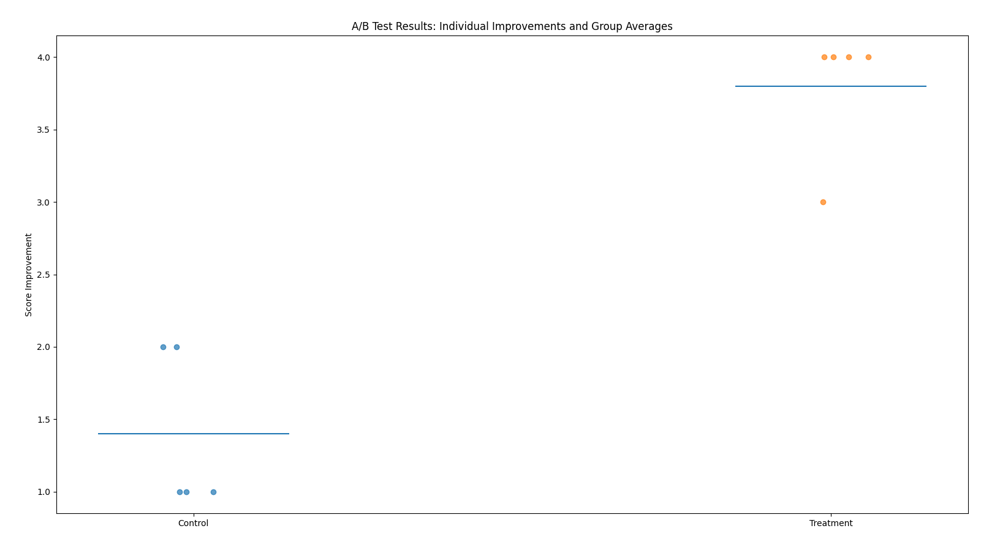
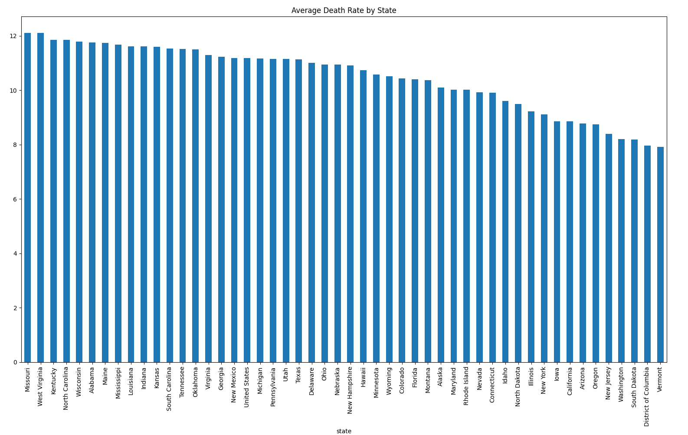

This project simulates a REDCap-style data collection and analysis workflow. I designed structured datasets, performed SQL analysis, and built a Tableau dashboard to evaluate program effectiveness.
Data Collection Forms:
I conducted an A/B test comparing a control and treatment group to evaluate program effectiveness. Using Python and statistical testing (t-test), I determined whether the treatment group showed significant improvement.

I used Python to extract real-world data from a public API, cleaned and transformed the dataset, and analyzed trends across states. I also created a visualization of the top states by average rate.
